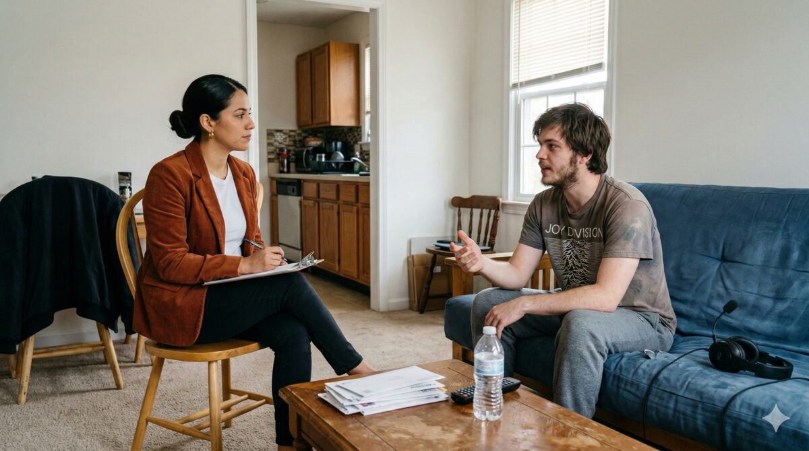
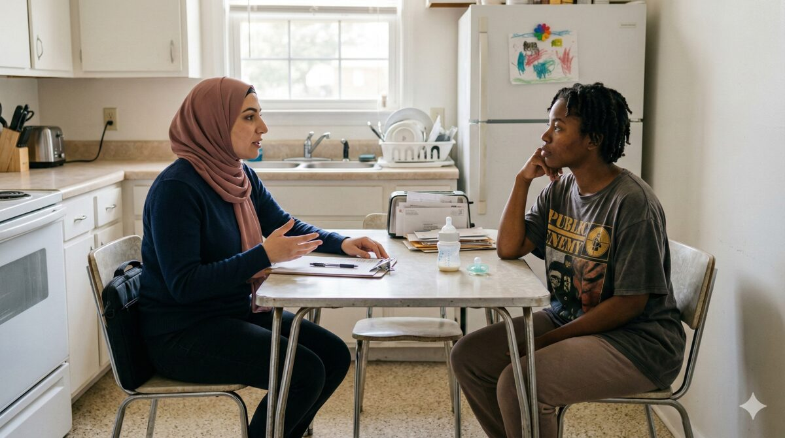
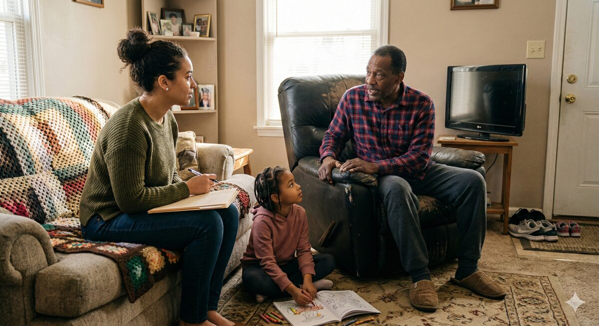

Community-Based Psychiatric Support Treatment • Rise 360 Module Series
The CPST training series sits at the intersection of three Virginia partners — DMAS, DBHDS, and CEP-Va — and the course design needs to represent all three while feeling fresh, timeless, and scalable across the entire module series. The palettes below are drawn from each partner's website and brand identity, combined into a unified system that serves the training without belonging entirely to any single brand.
Deep indigo header, blue surface tones.
Teal-blue, green gradient, gold accent.
Deep navy, sky blue, gold.
This direction stays within the blue family, drawing entirely from the core colors shared across all three partners. Deep indigo anchors the structure, teal drives interaction, and light blue serves as the accent — every tone native to the DMAS, DBHDS, and CEP-Va palettes. The result is clean, clinical, and modern across the full series.

This direction borrows the gold accent from the DBHDS color range and CEP-Va's brand to bring warmth to the cooler structural blues drawn from DMAS and CEP-Va. The amber tone introduces an approachable, community-grounded quality that complements the documentary photography and reflects the nature of CPST work happening in homes and neighborhoods.
This direction introduces green as the accent color, commonly associated with clinical and healthcare spaces. Used here it is a muted sage that brings a calm, therapeutic quality that differs from the warmth of amber or the restraint of an all-blue system. The green nods to the DBHDS palette while the deep blue structure and cool tints continue to carry the shared DNA across all three partners.


Deep blue structure — #16193E (from DMAS, echoed in CEP-Va's navy). Lesson openers, closers, section headers.
Teal-blue interaction — #0B6A8A (from DBHDS, echoed in CEP-Va's sky blue). Every link, button, and interactive moment.
White canvas — clean reading surface. Photos carry all the warmth.
Cool tint — #EDF4F7 for gentle emphasis sections.
Plus Jakarta Sans — one font family for the entire series. Bold for headings, regular for body. Humanist warmth, strong readability, dyslexia-friendly letterforms.
Documentary photography — set in the homes, neighborhoods, and everyday spaces where CPST work happens.
All WCAG AA accessible — every text pairing passes accessibility standards.
Every color pairing checked against WCAG 2.1 AA requirements. Normal text needs 4.5:1, large text (18px+ or 14px+ bold) needs 3:1.